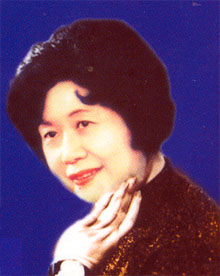

陆派
2019-05-16 19:55:45

陆派是陆锦花创立的越剧小生流派。陆派艺术是吸收了“四工腔”时期的著名小生马樟花而发展形成的。陆派与尹派、范派、徐派、毕派齐名的越剧五大小生流派。
简要介绍
陆锦花是与尹桂芳、范瑞娟、徐玉兰齐名的越剧四大小生之一，她创立的陆派唱腔吐字清晰，字字送听，所演穷生戏堪称一绝。
陆锦花是越剧改革的第一批参加者之一，她的唱腔早年受“四工腔”时期有“闪电小生”之称的马樟花影响，后结合自己特点衍化发展，在越剧小生中独树一帜，被公认为陆派。
艺术特色
陆派唱腔，不是以江河奔腾般的气势取胜，而以清晰明丽引人。
陆派唱腔特点：清丽婉约、轻快流畅、委婉柔和、清醇韵浓。
陆派表演特点：温文儒雅、内涵书卷、沉稳庄重、风度潇洒。
陆派戏之精神：明快大方、书卷饱满、典雅文静、内功深厚。
代表剧目
陆锦花的代表作有《珍珠塔》中方卿、《彩楼记》中吕蒙正、《情探》中王魁、《盘夫》中曾荣等。傅全香和她主演的《情探》，在1958年由江南电影制片厂摄制成黑白电影。20世纪40年代，大中华、百代、百歌等唱片公司灌制发行了有其演唱的《一缕麻》、《孝女心》、《香妃》、《黑暗天堂》、《礼拜六》、《义》等剧唱片多张。建国后，中国唱片社灌制发行了有其演唱的《盘夫》、《情探》、《劈山救母》等剧唱片多张。
流派传承
陆派艺术主要传人有：越剧名家曹银娣、优秀男小生许杰、著名演员黄慧、再传弟子越女后起之秀张宇峰、再传弟子后起青年男小生徐标新等。